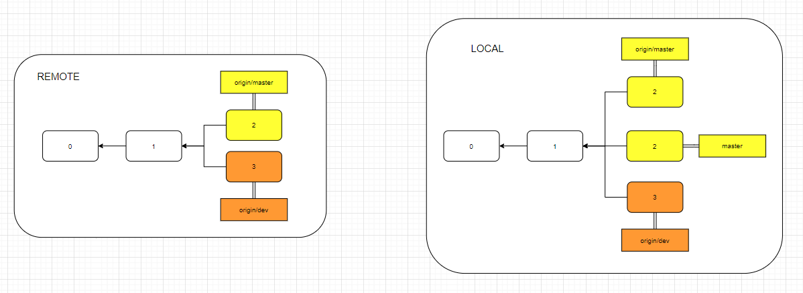
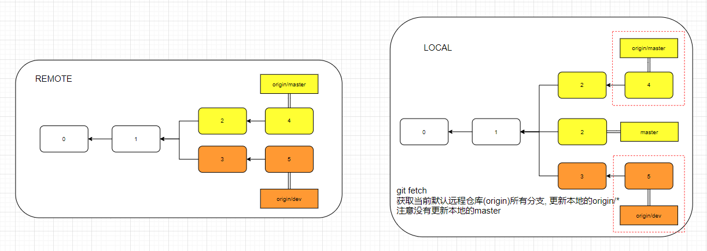
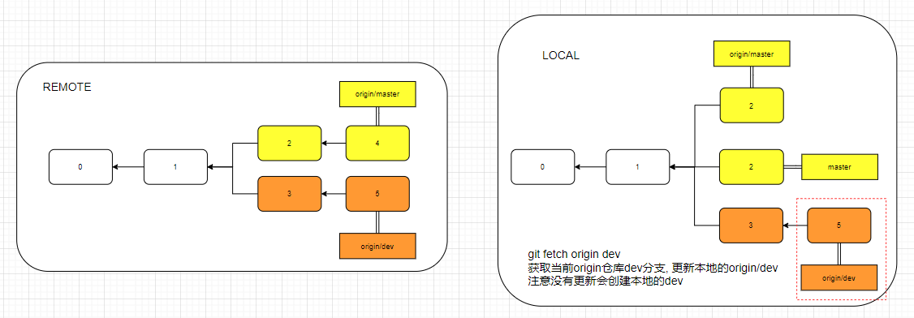

GitFetch
git fetch只负责将远程分支复制到本地，比如将remote/master复制到本地的origin/master
api说明
更新本地的远程分支(origin/*)
get fetch [ORIGIN] [R-BRANCH] [L-BRANCH]
git fetch不带参数则是默认拉取远程ORIGIN仓库, 所有分支(origin/*)ORIGIN拉取远程仓库的名称, 默认originR-BREANCH拉取远程仓库的分支名, 在本地的名称为(origin/R-BRANCH)L-BRANCH来取远程残酷的分支,并更新本地对应的分支
应用
- git fetch |这将更新git remote 中所有的远程repo 所包含分支的最新commit-id, 将其记录到.git/FETCH_HEAD文件中
- git fetch remote_repo |这将更新名称为remote_repo 的远程repo上的所有branch的最新commit-id，将其记录。
- git fetch remote_repo remote_branch_name |这将这将更新名称为remote_repo 的远程repo上的分支： remote_branch_name
- git fetch remote_repo remote_branch_name:local_branch_name |这将这将更新名称为remote_repo 的远程repo上的分支： remote_branch_name ，并在本地创建local_branch_name 本地分支保存远端分支的所有数据。
总结起来, fetch的应用就是:
git fetch origin master //从远程的origin仓库的master分支下载代码到本地的origin/master
git log -p master.. origin/master //比较本地的仓库和远程参考的区别
git merge origin/master //把远程下载下来的代码合并到当前的分支注意是当前的分支,而不是对应名字的分支。也就是说，如果当前的分支是dev，执行git merge，则是将origin/master与dev合并，而不是和本地的master合并。
另一个简单的写法是：
git fetch origin branch1:branch2首先执行上面的fetch操作，使用远程branch1分支在本地创建branch2(但不会切换到该分支).
如果本地存在branch2分支, 则是使用`fast forward’方式合并分支
原理
-
假设以下仓库, 通过
git clone到本地

本地会创建origin/master,origin/dev及master(origin/master复制的)三个分支, 且HEAD指针指向master分支. -
远程仓库的两个分支
origin/master和origin/dev都有了更新.-
git fetch命令进行本地更新.
git fetch是对所有origin/*(这里是origin/master,origin/dev)远程分支进行更新, 比如但不会对本地master分支进行更新

如果需要更新本地的master分支, 则需要使用git merge origin master -
本地使用
git fetch origin dev更新, 指定分支.
本地没有dev分支, 不会创建, 即使有也不会更新. 因为fetch只更新origin/*的分支

-
理解fetch的关键, 是理解FETCH_HEAD. 它的含义是某个branch在远程服务器上的最新状态. 这个列表保存在.Git/FETCH_HEAD文件中, 每一行对应一个分支.
- 当使用
git fetch时, 远程分支的master将作为FETCH_HEAD - 当使用
git fetch origin dev时, 远程分支的dev将作为FETCH_HEAD
* branch dev -> FETCH_HEAD
- branch source -> FETCH_HEAD